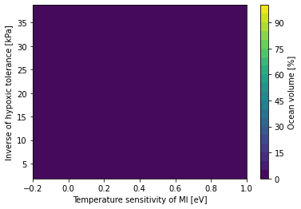

Habitat volume in trait space
Contents
Habitat volume in trait space¶
%load_ext autoreload
%autoreload 2
from itertools import product
import matplotlib.pyplot as plt
import metabolic as mi
import numpy as np
import thermodyn
import util
import xarray as xr
/glade/work/mclong/miniconda3/envs/metabolic/lib/python3.7/site-packages/dask_jobqueue/core.py:20: FutureWarning: tmpfile is deprecated and will be removed in a future release. Please use dask.utils.tmpfile instead.
from distributed.utils import tmpfile
Load WOA data¶
x = util.retrieve_woa_dataset('oxygen', 0)
x.o_an
<xarray.DataArray 'o_an' (time: 1, depth: 102, lat: 180, lon: 360)>
dask.array<open_dataset-8c272cfd6cd7b5b94b7fc9d3717afbf8o_an, shape=(1, 102, 180, 360), dtype=float32, chunksize=(1, 102, 180, 360), chunktype=numpy.ndarray>
Coordinates:
* lat (lat) float32 -89.5 -88.5 -87.5 -86.5 -85.5 ... 86.5 87.5 88.5 89.5
* lon (lon) float32 -179.5 -178.5 -177.5 -176.5 ... 177.5 178.5 179.5
* depth (depth) float32 0.0 5.0 10.0 15.0 ... 5.3e+03 5.4e+03 5.5e+03
* time (time) float32 8.214e+03
Attributes:
standard_name: mole_concentration_of_dissolved_molecular_oxygen_in_sea_w...
long_name: Objectively analyzed mean fields for mole_concentration_o...
cell_methods: area: mean depth: mean time: mean within years time: mean...
grid_mapping: crs
units: micromoles_per_kilogramds = xr.merge(
(
util.retrieve_woa_dataset('oxygen', 0).isel(time=0, drop=True)[['o_an', 'depth_bnds']],
util.retrieve_woa_dataset(['temperature', 'salinity'], 0).isel(time=0, drop=True)[
['t_an', 's_an']
],
)
).sel(depth=slice(0, 3000.0))
depth = xr.full_like(ds.t_an, fill_value=1.0) * ds.depth
ds['pO2'] = thermodyn.compute_pO2(ds.o_an, ds.t_an, ds.s_an, depth)
ds['dz'] = ds.depth_bnds.diff('nbounds').squeeze()
ds['area'] = util.compute_grid_area(ds)
ds['volume'] = (ds.dz * ds.area).where(ds.pO2.notnull())
ds.volume.attrs['long_name'] = 'Volume'
ds.volume.attrs['units'] = 'm^3'
ds = ds.compute()
ds
<xarray.Dataset>
Dimensions: (depth: 77, lat: 180, lon: 360, nbounds: 2)
Coordinates:
* lat (lat) float32 -89.5 -88.5 -87.5 -86.5 ... 86.5 87.5 88.5 89.5
* lon (lon) float32 -179.5 -178.5 -177.5 -176.5 ... 177.5 178.5 179.5
* depth (depth) float32 0.0 5.0 10.0 15.0 ... 2.8e+03 2.9e+03 3e+03
Dimensions without coordinates: nbounds
Data variables:
o_an (depth, lat, lon) float32 nan nan nan nan ... 296.0 296.0 296.0
depth_bnds (depth, nbounds) float32 0.0 2.5 2.5 ... 2.95e+03 3.05e+03
t_an (depth, lat, lon) float32 nan nan nan ... -0.6013 -0.6013
s_an (depth, lat, lon) float32 nan nan nan nan ... 34.95 34.95 34.95
pO2 (depth, lat, lon) float32 nan nan nan nan ... 26.13 26.13 26.13
dz (depth) float32 2.5 5.0 5.0 5.0 5.0 ... 100.0 100.0 100.0 100.0
area (lat, lon) float64 1.079e+08 1.079e+08 ... 1.079e+08 1.079e+08
volume (depth, lat, lon) float64 nan nan nan ... 1.079e+10 1.079e+10
Attributes: (12/49)
Conventions: CF-1.6, ACDD-1.3
title: World Ocean Atlas 2018 : mole_concentrat...
summary: Climatological mean dissolved oxygen for...
references: Garcia, H. E., K. Weathers, C. R. Paver,...
institution: National Centers for Environmental Infor...
comment: global climatology as part of the World ...
... ...
publisher_email: NCEI.info@noaa.gov
nodc_template_version: NODC_NetCDF_Grid_Template_v2.0
license: These data are openly available to the p...
metadata_link: https://www.nodc.noaa.gov/OC5/woa18/
date_created: 2019-07-29
date_modified: 2019-07-29 ds.dz.plot(y='depth', yincrease=False, marker='o');

ds.volume.sel(lon=-167.5).plot(yincrease=False);

ds.pO2.mean('lon').plot(yincrease=False);

ds.t_an.sel(lon=-179.5).plot(yincrease=False, vmin=-2.2, vmax=32);

curator = util.curator_local_assets()
cat = curator.open_catalog()
ds_trait_space = cat['trait-space'].to_dask().load()
ds_trait_space.trait_spc_active.plot();

dso = xr.Dataset()
for v in ['trait_spc_active', 'trait_spc_resting']:
trait_space = ds_trait_space[v]
metabolic_baseline = trait_space.attrs['metabolic_baseline']
hypoxic_tol, temp_sens = trait_space.dims
vol = xr.full_like(trait_space, fill_value=0.0)
for i, A_parm in enumerate(trait_space[hypoxic_tol].values):
for j, Eo in enumerate(trait_space[temp_sens].values):
Phi = mi.Phi(ds.pO2, ds.t_an, Ac=A_parm, Eo=Eo, dEodT=mi.dEodT_bar)
viable_trait_mask = xr.where(Phi > 1, 1.0, 0.0)
vol[i, j] += (ds.volume * viable_trait_mask).sum(['depth', 'lat', 'lon'])
vol *= 1e-6 # convert to 10^6 m^3
vol.attrs['units'] = '10$^6$ m$^3$'
vol_percent = 100.0 * vol / ds.volume.sum()
vol_percent.attrs['long_name'] = 'Ocean volume'
vol_percent.attrs['units'] = '%'
name = f'vol_habitat_{metabolic_baseline}'
dso[name] = vol
dso[f'{name}_percent'] = vol_percent
dso
<xarray.Dataset>
Dimensions: (Ac: 8, Eo: 7, Ao: 8)
Coordinates:
* Ac (Ac) float64 0.0258 0.0399 ... 0.3568 0.5528
* Eo (Eo) float64 -0.2 -0.0 0.2 0.4 0.6 0.8 1.0
* Ao (Ao) float64 0.0613 0.0962 ... 0.9114 1.429
Data variables:
vol_habitat_active (Ac, Eo) float64 0.0 0.0 ... 3.308e+11
vol_habitat_active_percent (Ac, Eo) float64 0.0 0.0 ... 6.31e-05 6.327e-05
vol_habitat_resting (Ao, Eo) float64 5.418e+10 ... 3.355e+11
vol_habitat_resting_percent (Ao, Eo) float64 1.036e-05 ... 6.417e-05dso.aerobic_volume_active.plot.contourf(levels=30);

dso.aerobic_volume_resting.plot.contourf(levels=30);

dso.aerobic_volume_active_percent.plot.contourf(levels=30);

plt.contourf(vol_percent.Eo, 1 / vol_percent.Ac, vol_percent, levels=np.arange(0, 105, 5))
cb = plt.colorbar()
plt.xlabel(util.attrs_label(vol_percent.Eo.attrs))
inv_attrs = dict(**vol_percent.Ac.attrs)
inv_attrs['long_name'] = 'Inverse of hypoxic tolerance'
inv_attrs['units'] = 'kPa'
plt.ylabel(util.attrs_label(inv_attrs))
cb.ax.set_ylabel(util.attrs_label(vol_percent.attrs));
